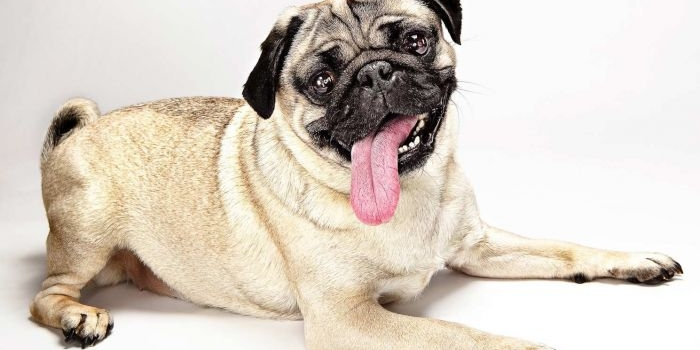
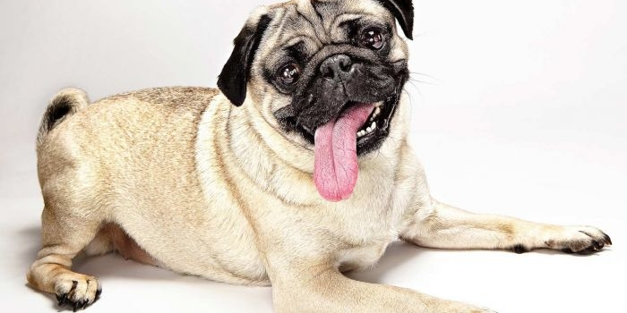

Мопс — собака с живым, веселым и при этом уравновешенным характером, благородная и привязчивая к хозяину." />
Мопс — собака с живым, веселым и при этом уравновешенным характером, благородная и привязчивая к хозяину." />
Папилломы (бородавки) очень часто встречаются у домашних животных (особенно у собак) в ротовой полости, в зоне языка, защечной области, на губах, мягком небе и в ушной раковине в виде одиночных образований разной формы и величины (вплоть до размера боба). Эти опухоли относятся к доброкачественным (фибропапилломы), несмотря на вирусное происхождение.
Образования могут быть одиночными (папиллома) и множественными (папилломатоз). Удаляют папиллому хирургическим путем либо перевязывая ее у основания шелковой, капроновой или льняной нитью.
Основание папилломы смазывают перед этим 5%-ной спиртовой настойкой йода. В большинстве случаев через 5-7 дней, а иногда и раньше папиллома отпадает самостоятельно.
Эффективен также метод внутривенного введения 0,5%-ного раствора новокаина в дозе 1 мл/кг массы тела животного трехкратно с интервалом в 3 дня между инъекциями. Другой метод - введение 0,5%-ного раствора новокаина под основание папилломы 2-3 раза с интервалом в 2-3 дня. Более успешно однократное введение под основание папилломы 0,5%-ного раствора новокаина, а затем 10%-ного раствора йодоформенного эфира (дозы по 0,3-0,5 мл каждого раствора). Весьма эффективны также инъекции 0,5%-ного раствора новокаина (2-3 мл) под яремный отросток 2-3 раза с интервалом в 4-5 дней (блокада верхнего шейного симпатического ганглия).
По Г.З. Минеджян, для уничтожения бородавок подобной этиологии рекомендуются следующие средства:
Смазывать бородавки ежедневно (2 раза в день) соком свежесорванного чистотела. Самый лучший сок - оранжевый - около корня растения. После того как поверхность бородавки почернеет, ее нужно аккуратно срезать маникюрными ножницами и продолжать смазывать соком чистотела, пока бородавка не пропадет совсем.
Ежедневно натирать бородавки чесноком. В течение месяца ежедневно утром и вечером (перед сном) давать животному порошок магнезии на кончике ножа.
Небольшие молодые бородавки можно свести соком одуванчика.
Ежедневно вечером перед сном капать из пипетки на бородавку каплю уксусной кислоты, соблюдая осторожность. Больше одной капли не употреблять.
Массу из сырых ягод рябины наносят на бородавку до ее исчезновения.
Держат сухой лед на бородавке сколько возможно. Через 2-3 часа повторяют процедуру, вечером - еще раз. Иногда 3-4 процедуры за день достаточно, чтобы бородавка сошла.
Смазывают соком молочая лозного. После того как поверхность бородавки почернеет, ее необходимо осторожно срезать маникюрными ножницами и продолжать смазывать, пока бородавка не исчезнет окончательно.